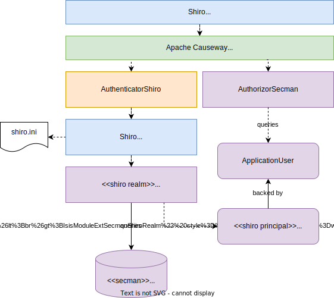
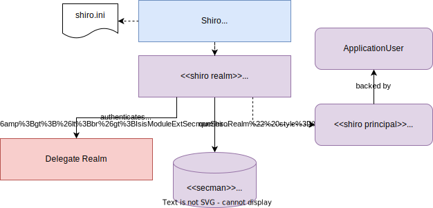

Setting up with Shiro
This section describes how to set up and configure SecMan as an Authorizor, with framework’s Shiro integration being used as the Authenticator.
The primary use case this enables is for authentication to be performed through an external mechanism, for example LDAP.
This is implemented through the SecMan’s shiro realm submodule, which provides an implementation of Apache Shiro’s Realm interface that then calls back into SecMan.
Local Authentication
The diagram below sketches the high-level architecture:

Thus:
-
Apache Causeway' Shiro security integration sets up Shiro web filters to intercept every http request, as well as the AuthenticatorShiro implementation.
-
The
AuthenticatorShirocalls to the Shiro Security Manager to obtain the authenticated principal. -
The Shiro Security Manager uses the
shiro.iniconfiguration file to look up the realm to perform the authentication; in this case we configure it to use Secman’s realm (CausewayModuleExtSecmanShiroRealm). -
Secman’s realm implementation queries the database and uses this to create an instance of
PrincipalForApplicationUser, where thePrincipalinterface is Shiro’s representation of an authenticated user. ThePrincipalForApplicationUseris backed by ApplicationUser, which all of the permissions to object members for this particular user. -
to render a page, the Apache Causeway viewer uses configured
Authorizor, in this case Secman’s own AuthorizorSecman. This looks up the current ApplicationUser (which will already reside in-memory) and renders the page according to which object members are visible or not.
The above configuration allows Secman to be used to authenticate users; the password is stored as an (typically) encrypted property of the ApplicationUser.
These are called "local" users, as per the ApplicationUser's accountType property.
Delegate Authentication
Local authentication - as described in the previous section - does not actually accomplish much; although Shiro’s Authenticator implementation is in use, since the Shiro Realm just queries the SecMan database, there is no real difference from simply using SecMan’s own Authenticator implementation.
Where things become more interesting and useful is that Secman’s Realm implementation also allows an alternative "delegate" realm (eg LDAP) to be queried. In such cases Shiro can obtain authentication of "delegated" users is performed by the delegate realm rather than locally.
The diagram below shows where this delegation occurs:

When a delegate realm is configured, an ApplicationUser entity can be automatically created in the SecMan database for an external user.
Secman can be configured so that these users are either locked or unlocked by default, as required, see below.
Dependencies
In addition to the regular dependencies required by Secman, also add in Secman’s Shiro Realm implementation:
<dependencies>
<dependency>
<groupId>org.apache.causeway.extensions</groupId>
<artifactId>causeway-extensions-secman-persistence-XXX</artifactId> (1)
</dependency>
<dependency>
<groupId>org.apache.causeway.extensions</groupId>
<artifactId>causeway-extensions-secman-encryption-jbcrypt</artifactId> (2)
</dependency>
<dependency>
<groupId>org.apache.causeway.extensions</groupId>
<artifactId>causeway-extensions-secman-delegated-shiro</artifactId>
</dependency>
</dependencies>| 1 | specify either causeway-extensions-secman-persistence-jpa or causeway-extensions-secman-persistence-jdo, as required |
| 2 | provides an implementation of PasswordEncryptionService |
Update AppManifest
In addition to the other modules that Secman requires to be added to your application’s AppManifest, also add:
You will also need to import the fixture module; SecMan uses fixture scripts to seed its entities:
@Configuration
@Import({
...
CausewayModuleExtSecmanRealmShiro.class, (1)
...
})
public class AppManifest {
}| 1 | enables Shiro integration (so that Shiro delegates to Secman for authentication).
This brings in a transitive dependency on the |
Ensure that no other CausewayModuleSecurityXxx module is imported into the AppManifest.
Shiro (Delegate) Realm
SecMan’s Shiro realm is configured using the shiro.ini file.
The following sets up Shiro without delegation:
[main]
authenticationStrategy=org.apache.causeway.extensions.secman.delegated.shiro.realm.AuthenticationStrategyForSecMan
causewayModuleSecurityRealm=org.apache.causeway.extensions.secman.delegated.shiro.realm.CausewayModuleExtSecmanShiroRealm
securityManager.authenticator.authenticationStrategy = $authenticationStrategy
securityManager.realms = $causewayModuleSecurityRealm
[users]
[roles]The [users] and [roles] sections are required but are unused.
The main point of introducing Shiro though is to introduce support for authentication by external mechanisms such as LDAP.
In this case we configure Shiro to use the external realm as the primary realm, with Secman’s Shiro realm set up as a "delegate" realm.
We specify the delegate realm implementation in the shiro.ini file, and "inject" it into the Secman realm.
For example, to use LDAP Realm for Shiro as a delegate:
[main]
...
ldapRealm=org.apache.causeway.extensions.shirorealmldap.realm.impl.CausewayLdapRealm (1)
ldapRealm.xxx=... (2)
ldapRealm.yyy=...
causewayModuleSecurityRealm.delegateAuthenticationRealm=$ldapRealm (3)
...| 1 | instantiate the LDAP realm |
| 2 | configure the LDAP realm as required |
| 3 | specify the LDAP realm as the delegate realm for SecMan’s own realm. |
Configuration Properties
As mentioned in the introduction, if delegate authentication has been set up, this means that authentication may pass for a user that Secman knows nothing about.
In this case Secman will automatically create an ApplicationUser for this externally delegated authenticated user, with the type set to "DELEGATED".
We can configure whether such automatically created accounts should be unlocked or locked by default:
causeway:
extensions:
secman:
delegated-users:
auto-create-policy: AUTO_CREATE_AS_LOCKED